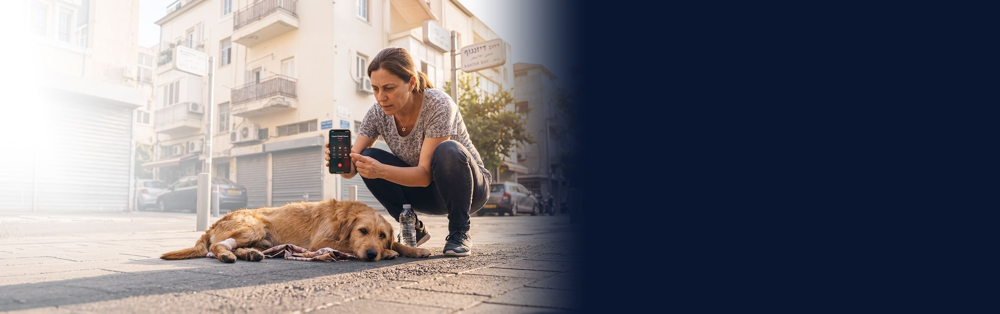
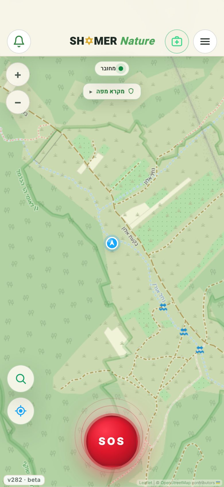
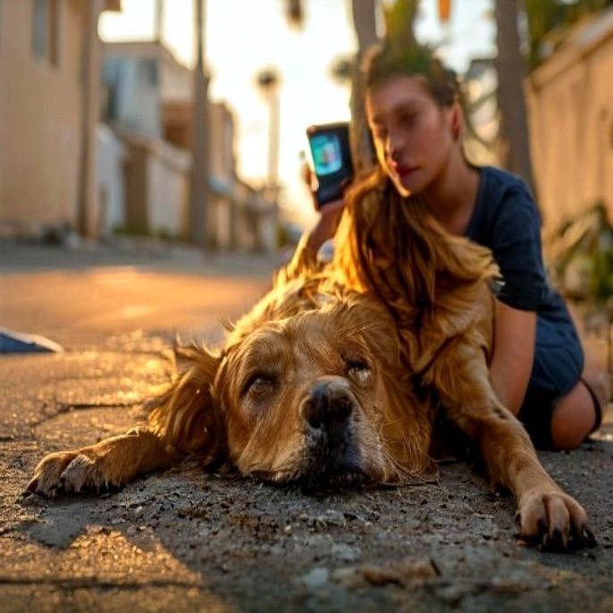
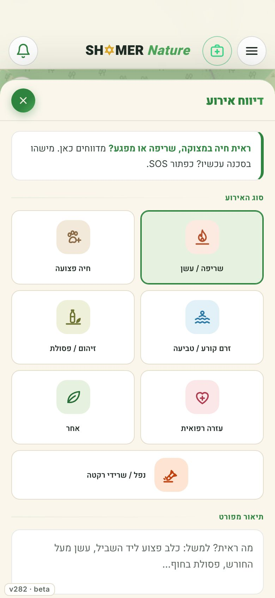
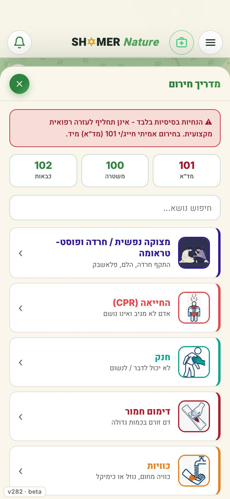
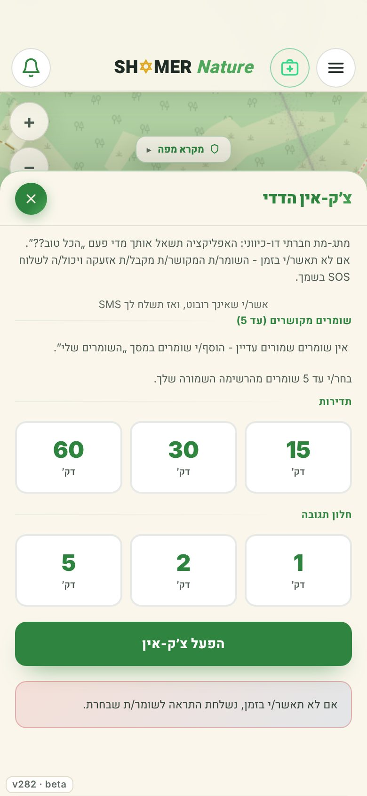
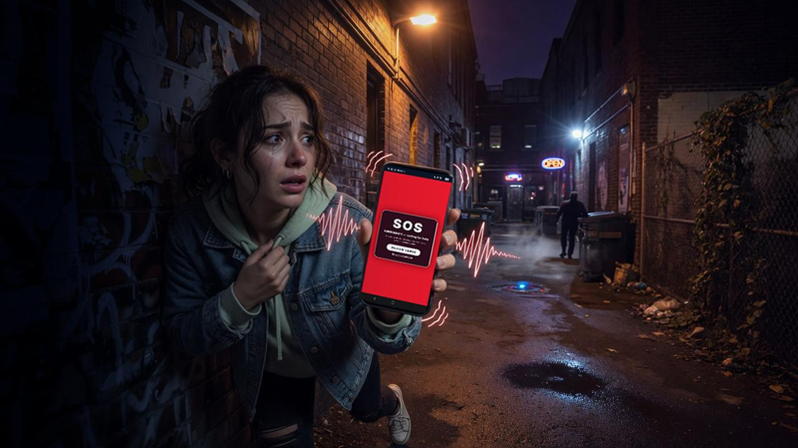
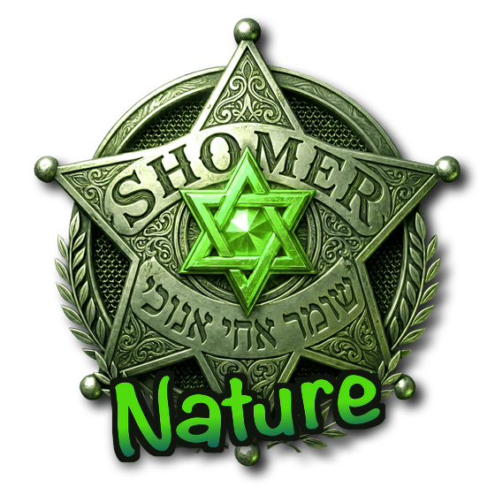

חיה פצועה, שריפה קטנה, פסולת בשמורה.
רואים, מדווחים, והשומרים הקרובים יודעים מיד.

מצלמים, בוחרים סוג אירוע, והמיקום נלכד לבד. מי שקרוב ויכול לעזור רואה את זה על המפה.
לחיצה אחת, והשומרים שלי מקבלים את המיקום שלך. יוצאים לבד? אם לא תאשרו בזמן שהכול בסדר, השומרים שלי יקבלו התרעה.
כוויה, דימום, הכשה, טביעה, שיטפון בנחל. צעד אחר צעד, בעברית פשוטה.
מסכים אמיתיים מגרסת הבטא של SH✡MER Nature.



הצטרפו לגרסת הבטא של SH✡MER Nature - חינם. רואים חיה במצוקה, שריפה או מפגע? מדווחים, ומי שקרוב יכול לעזור.
להורדה - חינם!אייפון או מחשב? פתחו את SH✡MER Nature בדפדפן, ובאייפון: שיתוף ← "הוספה למסך הבית".
Android APK · SH✡MER Nature beta 1.0.10 · 13 MB

SH✡MER Nature הוא כלי עזר קהילתי בלבד, לא שירות חירום ולא תחליף לו.
השימוש על אחריות המשתמש בלבד; 3Shamrocks Studio אינה אחראית לכל נזק ישיר או עקיף. בחירום חייגו 101 · 100 · 102.
